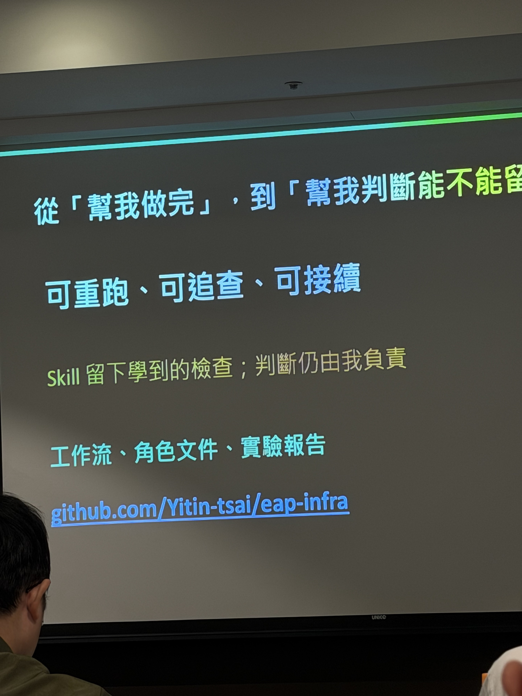

BEFORE · 逐筆清理
30,000 tasks → 30,000 UPDATE
→ DB write pressure → backlog
→ DB write pressure → backlog
AFTER · 批次 SQL
claimed tasks → batch SQL × 32
→ lower write pressure → downstream
→ lower write pressure → downstream
| 指標 | 原方案 | 批次方案 |
|---|---|---|
| SQL 更新次數 | 約 30,000 | 32 |
| BUY 成交速率 | 664 trades/s | 922 trades/s |
| 最大 backlog | 14,110 | 6,261 |
| Match → Wallet p95 | 13.6 秒 | 4.5 秒 |
MatchEngine → cleanup task → PostgreSQL → Wallet
Adoption gate · 30,000 筆成交 ID 與資產核對正確，方案僅在該測試條件下採用
922 trades/s is not production capacity.
922 trades/s is not production capacity.